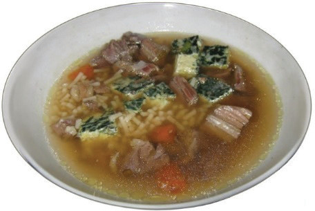
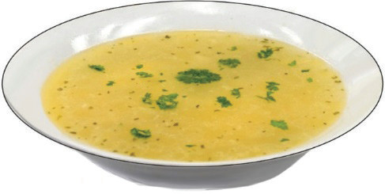

Broth: This soup is similar to clear soup, except that it is not strained. It also has solid ingredients such as small pieces of vegetables, fish, meat, rice, pasta or oats. The preparation of broth is similar to that of clear soup. Examples of broth soups are beef broth, vegetable broth and fish broth. Figure 5.17 shows broth soup.

Consommé: This is a light clear soup that is made with concentrated beef or chicken stock and served hot. Egg white is added to the soup before serving. Figure 5.18 illustrates consommé soup.

Thick soups
Thick soups are thickened using flour, cornstarch, cream, vegetables, gelatines and other ingredients. Unlike thin soups, thick soups are opaque. They can have different textures and flavours depending on the thickening ingredients used. Thick soups are classified as puree soup, cream soup, chowders, bisque and velouté.